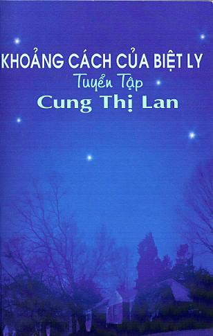

Tranh Bìa: Nguyễn Thế Huỳnh(hls)
Xuất bản ngày 19 tháng 07 năm 2009
Tại Hoa Thịnh Đốn Hoa Kỳ
Tác giả giữ bản quyền
Đăng ký tại U. S Library of Congress
“Mẹ! Sao mẹ cho con đi ghe như vậy lỡ con ‘té’ xuống biển chết sao?”
Tinô đã hỏi tôi như thế khi tôi nói cho nó biết chiếc ghe thúng lặng lờ trước mặt là vật đưa chúng tôi ra ghe lớn để vượt biên; cho nên, thay vì tả thêm cảnh trốn ra khỏi nước, tôi đã nín lặng. Trong không khí nặng nề bao trùm quanh chúng tôi, giọng nói đầy trách móc của Tinô vương vất như không thể dứt. Nó đã đánh thức những hình ảnh ngủ yên từ lâu trong tâm trí tôi và đưa tôi trở về thời gian cũ. Tưởng như nghe lại những tiếng nấc đau khổ và chứng kiến cảnh cong oằn vật vã của những người mẹ mất con trong các trại tị nạn năm nào, thần kinh của tôi càng lúc càng căng thẳng và trí óc tôi trở nên rối loạn và ngổn ngang. Trước khi đem Tinô đi vượt biển, tôi đã dự định sẽ chết theo nó khi gặp phải điều không may; nhưng tôi sẽ ra sao nếu tôi không thể thực hiện được ý định của mình và phải chịu tình cảnh mất con như những người đàn bà kia. Tôi sẽ sống làm sao trước cái chết của con mình mà sự chọn lựa là do mình chứ không phải nó. Nhìn ánh mắt chất vấn và khuôn mặt phụng phịu của Tinô, tôi muốn kể cho nó nghe tất cả những gì đã xảy ra kể cả tâm trạng của mình lúc ấy, nhưng nghĩ đứa trẻ lên tám không thể nào hiểu hết những uẩn khúc bên trong sự việc, đã hứa với lòng chờ đến khi nó trưởng thành.
Khi Tinô được mười tám tuổi, tôi chưa kịp thực hiện ý định của mình, đã nghe nó nói một cách chân thành rằng: Con cảm ơn mẹ đã đưa con vượt biển cho con được sống ở Mỹ đây. Ngạc nhiên vì đứa con trai đầu của mình vẫn còn nhớ đến câu hỏi hơn mười năm về trước, tôi chợt khám phá rằng đứa trẻ không được sinh ra trên đất nước mà nó đang sinh sống sẽ không bao giờ từ bỏ ý định tìm hiểu về cội nguồn, sự khác biệt và những sự việc liên quan đến đời sống hiện tại của nó. Với kiến thức của học sinh tốt nghiệp trung học và chiêm nghiệm thực tế sau chuyến thăm Việt Nam, Tinô đã tự giải đáp những thắc mắc mà nó đặt cho tôi trước đây. Qua lời cảm ơn chân thật của nó, tôi nhớ đến những tấm lòng nhân ái và quảng đại của biết bao vị ân nhân của mình. Thuyền trưởng Jorgen L. Olesen, thủy thủ đoàn của tàu Maersk, nhân viên của các trung tâm tị nạn Omura tại Nagasaki và Kokusai Kuyen tại Tokyo của Nhật Bản là những người đã tận tình giúp đỡ chúng tôi mọi mặt trong bước đường gian nan trên biển, trên đảo cho đến ngày định cư tại Mỹ. Tôi cũng xin bày tỏ lòng biết ơn đến những người tổ chức vượt biển, những người đồng hành, những người cùng cảnh ngộ, những người đã hết lòng giúp đỡ và san sẻ vật chất cũng như tinh thần với gia đình chúng tôi trong các chuyến đi và ở các trại tị nạn. Những Tấm Lòng Nhân Ái là Hồi Ký Mạo Hiểm Tìm Tự Do, ghi lại những ngày gian nan mà chúng tôi, những người chung cuộc, đã cùng trải qua trong những ngày gian nan và nguy hiểm nhằm bày tỏ tấm lòng biết ơn chân thành của tôi và gia đình tôi đến các vị ân nhân mà chúng tôi đã gặp.